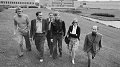

Rut Inez Gunnel Vesterlund Gustafsson
Professor 1987 i statsvetenskap vid Umeå univ, sist chef för Nordforsks sekretariat i Oslo.
| Född: | 1943-07-04 Torrberg 1:3, Norsjö fs, Norsjö sn. [1] |
|---|
| Vigsel: | 1965-06-26. [2] |
|---|
| Levde: | 1973 Rödhakev 52 A, Umeå, Ålidhems fs, Umeå kn. [2] |
|---|
| Levde: | 1991 Rödhakev 52 A, Umeå, Ålidhems fs, Umeå kn. [3] |
|---|
| Barn: |
|---|
| Tomas Gustafsson (1972 - ) |
| Erik Gustafsson (1975 - ) |
| Karin Gustafsson (1983 - ) |
Noteringar
Rut Inez Gunnel Gustafsson, född Westerlund 4 juli 1943 i Norsjö församling, Västerbottens län, är en svensk statsvetare.
Gunnel Gustafsson, som är dotter till virkesmätare Hjalmar Westerlund och Agnes Brändström, blev filosofie kandidat 1967, filosofie licentiat 1970, filosofie doktor i statsvetenskap vid Umeå universitet 1972 med avhandlingen Strukturomvandling och politisk socialisation,[1] docent 1976, ordinarie universitetslektor 1977 och utnämndes 1987 – som första svenska kvinna[2] – till professor i statsvetenskap, och efterträdde samtidigt Per-Erik Back som ämnesföreträdare vid Statsvetenskapliga institutionen.[3] Hon var ordförande i Statsvetenskapliga förbundet 1978–1980 och ledamot av Humanistisk-samhällsvetenskapliga forskningsrådet 1980–1986.[4]
Gustafssons forskning har framför allt varit inriktad på skandinavisk politik och policy, genusperspektiv på globalisering och demokrati samt politisk kultur.[2]
Åren 2000–2004 var hon prorektor vid Umeå universitet, sedan biträdande generaldirektör för Vetenskapsrådet (2005–2010)[5], varefter hon blev chef för Nordforsks sekretariat i Oslo.
I efterdyningarna av tsunamin i Sydostasien 2004 var hon ledamot av Katastrofkommissionen.[6]
Publikationer (i urval)
Gustafsson, Gunnel (1975). Rekrytering till politiska poster i Sverige. Politik, 0349-5620 ; 1975:3. Umeå: Univ. Libris 899953
umu.diva-portal.org/smash/get/diva2:606361/FULLTEXT02.pdf
Gustafsson, Gunnel (1987). Decentralisering av politisk makt: en studie av svensk byråkrati i kontakt med sin omvärld. Stockholm: Carlsson. Libris 8376606. ISBN 91-7798-150-2
Gustafsson, Gunnel; Lidström Anders (1989). Handlingsutrymme i skolans värld: förutsättningar för förverkligande av politiska mål i ett decentraliserat system. Vad säger forskningen?, 0282-7530 ; 89:2. Stockholm: Skolöverstyr. Libris 7656638. ISBN 91-7662-571-0
Gustafsson, Gunnel; Eduards Maud, Rönnblom Malin (1997) (på eng). Towards a new democratic order?: women's organizing in Sweden in the 1990s. Publica, 0346-6388. Stockholm: Publica. Libris 8351982. ISBN 91-39-10133-9
Källor
Noter
1. Gustafsson, Gunnel (1972). Strukturomvandling och politisk socialisation. Umeå: Univ. Libris 23778
2. [a b] ”Gunnel Gustafsson: Man får inga gratisluncher”. Forskning & Medicin. Vetenskapsrådet. 19 december 2006. Arkiverad från originalet den 4 april 2018. Läst 4 april 2018.
web.archive.org/web/20180404135018/https://forskningochmedicin.vr.se/knappar/tidigarenummer/innehallnr12005/gunnelgustafssonmanfaringagratisluncher.4.2aebc6b810f3c933b1580002697.html
3. Statsvetenskapliga institutionen – Om institutionen
4. Gustafsson, Gunnel R I i Vem är hon: kvinnor i Sverige: biografisk uppslagsbok (1988), ISBN 91-1-863422-2
Gustafsson, Gunnel R I, professor, Umeå, f i Norsjö, Västerb 1 430704, dtr t virkesmät Hjalmar
Westerlund o Agnes, f Brändström.
Fil kand 67, fil Hc 70, fil dr 72, doc 76, ord univlektor 77, professor i statskunskap 87, barnled 72, 75, 83, doc i statskunskap 80-86. Ordf Statsvetenskapl förb 78-80, led HSFR 80-86.
Skr bl a Decentralisering av politisk makt (87), Comparing Imple-mentation processes in Sweden
and United States (86), Political socialization in Scandinavia (87). G 65 lantbrukskonsulent Göte
Gustafsson, f34, son themmansäg Knut Gustafsson o Ruth, f Ågren.
5. ”Gunnel Gustafsson ny biträdande generaldirektör för Vetenskapsrådet”. Umeå universitet. 30 november 2004. Läst 3 februari 2017.
6. Sverige och tsunamin – granskning och förslag, SOU 2005:104
Personhistoria
| Årtal | Ålder | Händelse |
|---|
| 1943 |
|
Födelse 1943-07-04 Torrberg 1:3, Norsjö fs, Norsjö sn [1] |
| 1945 |
1 år |
Brodern Frans Gösta Georg Westerlund föds 1945-03-03 Torrberg 1:3, Norsjö fs, Norsjö sn [1] |
| 1949 |
5 år |
Systern Siri Mona Elisabeth Vesterlund föds 1949-06-25 Torrberg 1:3, Norsjö fs, Norsjö sn [4] |
| 1965 |
21 år |
Vigsel Knut Göte Emanuel Gustafsson 1965-06-26 [2] |
| 1972 |
|
Sonen Tomas Gustafsson föds 1972 Rödhakev 52 A, Umeå, Ålidhems fs, Umeå kn [2] |
| 1973 |
|
Levde Knut Göte Emanuel Gustafsson 1973 Rödhakev 52 A, Umeå, Ålidhems fs, Umeå kn [2] |
| 1975 |
|
Sonen Erik Gustafsson föds 1975 Rödhakev 52 A, Umeå, Ålidhems fs, Umeå kn [2] |
| 1983 |
|
Dottern Karin Gustafsson föds 1983 Rödhakev 52 A, Umeå, Ålidhems fs, Umeå kn [5] |
| 1991 |
|
Levde Knut Göte Emanuel Gustafsson 1991 Rödhakev 52 A, Umeå, Ålidhems fs, Umeå kn [3] |
| 1992 |
48 år |
Maken Knut Göte Emanuel Gustafsson dör 1992-04-01 Rödhakev 52 A, Umeå, Ålidhems fs, Umeå kn [6] |
| 1996 |
53 år |
Modern Agnes Matilda Brändström dör 1996-07-20 Hjoggböleliden 15, Skellefteå, Bureå fs, Skellefteå kn [7] |
| 1997 |
53 år |
Fadern Bo Hjalmar Hilding Westerlund dör 1997-06-14 Häckstigen 35, Skellefteå, Skellefteå fs, Skellefteå kn [8] |
Dokument
Källor
| [1] | Norsjö (AC) AIIa:10 (1928-1948) Bild: 170 Sida: 609 |
| |
| | |
| [2] | Mtl Sveriges befolkning 1975 |
| |
| | |
| [3] | Västerbotten), fastigheten Stg 2077Bu. |
| |
| | |
| [4] | SCB Födda AC Norsjö 46/1949, Mtl Sveriges befolkning 1950 |
| |
| | |
| [5] | Mtl Sveriges befolkning 1985 |
| |
| | |
| [6] | RTB 92, SPAR 92, SPAR 95, SDB7_05082386 |
| |
| | |
| [7] | RTB 96 / SPAR 92f / SPAR 96 |
| |
| | |
| [8] | RTB 97 / SPAR 92f / SPAR 97 |
| |
|
|
2010-09-15. Gunnel Gustafsson direktör Nordforsk. TFI konferens Köpenhamn.
Author Johannes Jansson
Licensed under Creative Commons Attribution 2.5 Denmark. Available for free use provided the source is credited
|
| |
|  |
1972. Några av Statsvetenskapliga institutionens lärare och forskare i början av 1970-talet. Fr.v. Kjell Lundmark, Harry Forsell, Pär-Erik Back, Sten Markgren, Gunnel Gustafsson och Dan Brändström.
Foto VK
|
|
{kind=link}
{kind=link}